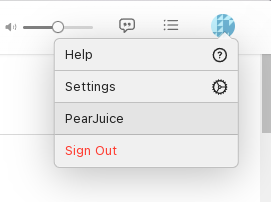

PearJuice is a custom client for Apple Music. For more info please see the README.
PearJuice is currently running on Firefox. Due to issues in the framework PearJuice is built in, many features don't work in Firefox.
For example, you will not be able to access the config menu.
If you need to reconfig PearJuice before this issue is fixed (it will be soon:tm:) then open the devtools (ctrl-shift-i) and type
pj.config()in the console.
I hope to have this fixed soon.
To configure PearJuice, check the account context menu in the top right.
This will only be available when signed in!
Please specify config settings:
PearJuice is now setup. Hopefully nothing blows up!